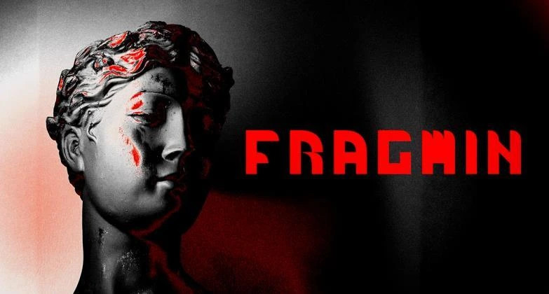
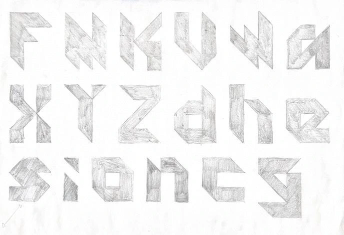
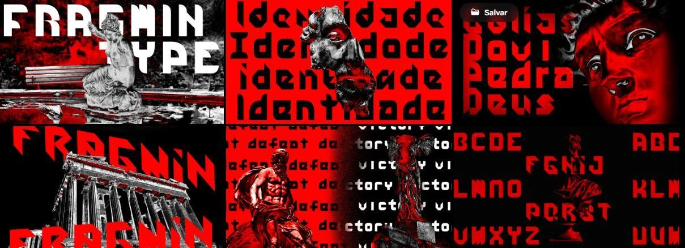

Fragmin
Fragmin began as an exercise in creating a variable typeface built from a single grid. The starting point was fragmentation, the concept that also gave the project its name: different parts that, even when opposed, find a way to connect and form a harmonious visual system.
The aesthetic was inspired by the idea of a futuristic past, combining geometric structures, modular shapes and an experimental atmosphere. Each character was developed from fragments that can be rearranged, creating different possibilities within the same structure.
The project was developed as a group, with the challenge of ensuring that every version of the typeface used the same grid and could relate to the others. Using this system, we explored interpolation between shapes, allowing the fragments to transform fluidly and continuously.
Fragmin is therefore more than a typeface with different versions: it is a system in constant transformation. Between one shape and another, new combinations, characters and visual possibilities emerge.
The result is an experimental variable typeface that makes the construction of letters part of the experience: fragments that continuously come together, break apart and transform.


